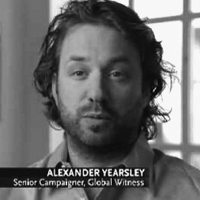

ANCIR’s iLab provides grantees, collaborators, partners and formalised members with round-the-clock investigative support services. This includes editorial, cross-examination, data, technology, forensics, financial and other services to assist in addressing and resolving investigative queries.
To access the iLab, just email your inquiry to our contact at
ilab@investigativecenters.org. We will respond to
all contact requests within 36 hours.
What kind of support is available?
Examples of inquiries may range from tracing metadata of documents and encrypting emails to identifying beneficial owners in opaque corporate vehicles.
The service underpins and complements Investigative Dashboard Africa (ID) service which provides free data from over 400 databases in 120 jurisdictions.
If you are interested in iLab services for a special project, please email ilab@investigativecenters.org with special project, your institute/media house and theme in the subject title.
Who is providing support?
Our staff is comprised of core people who are also ANCIR’s trainers and contributors on in-house projects and collaborations.
Beyond this, iLab has a broad network of experts in the Maghreb, as well as Francophone and Lusophone regions that can be called upon for a variety of investigative bottlenecks ranging from extractive industries to climate, aviation, maritime and other queries.
Investigative advisor: Khadija Sharife
 Khadija Sharife is an African investigative researcher and writer. She helps coordinate the African Network of Centers for Investigative Reporting (ANCIR), Investigative Dashboard (Africa), and the EU-funded Environmental Trade and Liability (EJOLT). She is a fellow to the World Policy Institute and contributor to the Tax Justice Network (Africa). She has published in a number of academic and mainstream media including Africa Confidential and the World Policy Journal. During the past year, she has helped uncover billions of dollars in mispriced minerals from African countries including South Africa, Angola, Zimbabwe among others. Her specialisation is financial opacity, political ecology and corruption. She is based in South Africa.
Khadija Sharife is an African investigative researcher and writer. She helps coordinate the African Network of Centers for Investigative Reporting (ANCIR), Investigative Dashboard (Africa), and the EU-funded Environmental Trade and Liability (EJOLT). She is a fellow to the World Policy Institute and contributor to the Tax Justice Network (Africa). She has published in a number of academic and mainstream media including Africa Confidential and the World Policy Journal. During the past year, she has helped uncover billions of dollars in mispriced minerals from African countries including South Africa, Angola, Zimbabwe among others. Her specialisation is financial opacity, political ecology and corruption. She is based in South Africa.
Investigative advisor: Alex Yearsley

Alex Yearsley is the founder and Director of Stanley Global Services, a bespoke business intelligence and political risk consultancy which focus on Africa, the Middle East, Far East and the FSU. Prior to the establishment of SGS, he was a Director of Proven, part of the Good Governance Group – G3 , where he was responsible for litigation support, asset tracing and business intelligence investigations for a wide variety of corporate, governmental and private clients. From 1997 to 2009 he worked at Global Witness, a UK based investigative human rights nongovernmental organisation responsible for international campaigns on corporate and governmental corruption centered on the trade in and exploitation of natural resources. At Global Witness he built up an extensive network in the NGO world but also in global media outlets, academics, governments, law enforcement and relevant security agencies. He has extensive investigative field experience across west, southern and central Africa and South East Asia. He has also worked in the Middle East and has built up an excellent source network in the middle and Far East and FSU. Having spent over a decade in the civil society movement he has an excellent understanding of the motivations and issues that drive and fund the activist side of the academic world and also the campaigning nongovernmental community.
Cross-examination advisor: Heinrich Böhmke
 Heinrich Böhmke is an experienced trainer and director at the Specialised Skills Institute of SA. He is also an investigator and litigator with experience in prosecuting public and private sector corruption and sexual misconduct matters among other investigations in South Africa. In 2013, Bohmke adapted the courtroom method of interrogating narratives and witnesses for investigative journalists and editors.The courses has been presented multiple times across Africa including South Africa, Kenya, Nigeria, Uganda as well as Senegal and Ghana.
Heinrich Böhmke is an experienced trainer and director at the Specialised Skills Institute of SA. He is also an investigator and litigator with experience in prosecuting public and private sector corruption and sexual misconduct matters among other investigations in South Africa. In 2013, Bohmke adapted the courtroom method of interrogating narratives and witnesses for investigative journalists and editors.The courses has been presented multiple times across Africa including South Africa, Kenya, Nigeria, Uganda as well as Senegal and Ghana.
Data advisor: Friedrich Lindenberg
 Friedrich Lindenberg is a news technologist with Code for Africa. He is also a coder and data journalist interested in how web technology can be utilised to create new narrative and investigative techniques. He was a 2013 Knight-Mozilla OpenNews Fellow at Spiegel Online. Previously, he contributed to various projects at the Open Knowledge Foundation, including OpenSpending, a platform that helps citizens across the world keep track of government finance.
Friedrich Lindenberg is a news technologist with Code for Africa. He is also a coder and data journalist interested in how web technology can be utilised to create new narrative and investigative techniques. He was a 2013 Knight-Mozilla OpenNews Fellow at Spiegel Online. Previously, he contributed to various projects at the Open Knowledge Foundation, including OpenSpending, a platform that helps citizens across the world keep track of government finance.
Digital security advisor: Giovanni Pellerano
 Giovanni Pellerano is a Computer Engineer graduated at Università di Pisa. Security researcher and good skilled computer programmer for passion, he is active developer on Globaleaks, Tor2Web and SniffJoke.
Giovanni Pellerano is a Computer Engineer graduated at Università di Pisa. Security researcher and good skilled computer programmer for passion, he is active developer on Globaleaks, Tor2Web and SniffJoke.
Become an iLab team member!
If you are interested in becoming part of the iLab network as contributing expert, please email ilab@investigativecenters.org with your country and expertise in the subject title, including a resume, samples of work, and a cover letter.